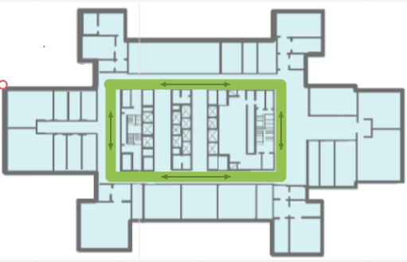
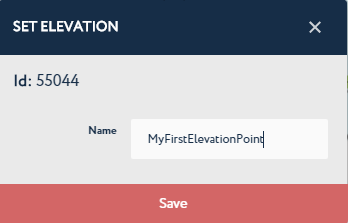
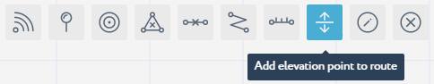

Add Routes¶
In the seventh step of the getting started with Navigine Indoor Location Services, you add routes to your sub-location’s map. The Navigine SDK enables you to add routes from the current position to any reachable place in the map.
The Navigine CMS provides two routing tools: Draw Route and Add Elevation Point to Route. Make sure that the Routes layer is active in the Layers menu.
You can choose the layers that you want to be available with the currently open sub-location. To do so,
- Activate the Layers drop-down menu,
- Click the Blue Field next to a layer’s name. Blue background means that the layer is active, gray means that the layer is not active.

Adding Routes¶
You can add routes according to the guidelines described in the table below.
In the sub-location editing window, activate the Add Routes tool.

Click the sub-location’s map add vertices and demarcate the route. Once you add the last vertex, double-click the map to add the route to the map.

Adding Elevations
To connect routes of different sub-locations, you need to add elevations. The following table provides guidelines on using the Add Elevation tool.
Release all tools to be able to add elevation points. TO deactivate the active tool, click its button.
Click the vertex that you want to make the elevation point, then enter its name in the popped-up dialog box, and click Save. Do it for at least to vertices on two separate sub-location maps.

Once you finish setting elevation points, activate the Add Elevation tool.

In the Elevation mode, click the elevation points of your choice to connect the routes they represent. To end drawing connections, double-click the last point.

At any moment of object creation in the sub-location’s map, you can use the Edit drawn routes, walls, and barriers tool.
In the sub-location editing window, activate the Edit tool.

Click the drawn object’s vertex with the Edit tool activated, and move the vertex to a new position.